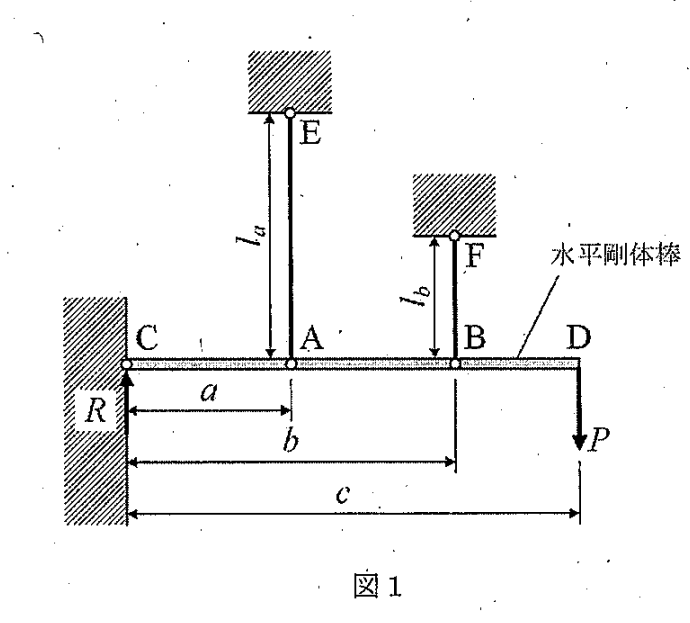

問題概要
2022年度の材料力学入試では、大問【1】で不静定問題（応力と変形）、大問【2】で一端固定他端支持はりのたわみに関する問題が出題されました。材料力学の基本的な概念から応用問題まで、幅広い知識が問われる内容でした。
問題PDFをダウンロード (2022年度) 解答PDFをダウンロード (2022年度)大問【1】
図1は、壁にピンで固定された剛体棒CDが2本のワイヤーAEとBFで吊り下げられ、先端Dに荷重Pが作用している状況を示しています。

図1：問題1の説明図
考え方のヒント
この問題は不静定問題です。力のつり合い式だけでは解けないため、変形の適合条件を考慮する必要があります。剛体棒の回転によるワイヤーの伸びと、ワイヤーの材料特性による伸びを結びつけて考えましょう。
途中式と解答
(1) 上下方向のつり合い式と，点Cまわりのモーメントのつり合い式を求めよ
物体にはたらく力のつり合いを考えます。支持力\(R\)とワイヤーの張力\(T_a, T_b\)を上向き、外力\(P\)を下向きとすると、垂直方向の力のつり合い式は以下のようになります。
力のつり合い式:
$$R + T_a + T_b - P = 0$$
次に、点Cを回転の中心としてモーメントのつり合いを考えます。点C周りのモーメントのつり合い式は以下の通りです。
点Cに関するモーメントのつり合い式:
$$a T_a + b T_b - c P = 0$$
(2) ワイヤーAEとBFの応力を求めよ
これは不静定問題なので、力のつり合いに加えて変形の適合条件を考慮する必要があります。剛体棒CDが点Cを中心に微小角度 \(\theta\) だけ回転すると、点Aと点Bの変位 \(\delta_a, \delta_b\) はそれぞれワイヤーの伸びに等しくなります。
変位の幾何学的関係：
$$\delta_a = a \theta, \quad \delta_b = b \theta$$
一方、ワイヤーの伸びは材料の性質から以下の式で表されます。
$$\delta_a = \frac{T_a l_a}{E_a S_a}, \quad \delta_b = \frac{T_b l_b}{E_b S_b}$$
これらの式から \(\theta\) を消去して、変形の適合条件式を得ます。
$$\frac{\delta_a}{a} = \frac{\delta_b}{b} \implies \frac{T_a l_a}{a E_a S_a} = \frac{T_b l_b}{b E_b S_b}$$
この式とモーメントのつり合い式 \(a T_a + b T_b = c P\) を連立して、\(T_a\)と\(T_b\)を求めます。
適合条件式から \(T_a\) を \(T_b\) で表すと、 $$T_a = T_b \cdot \frac{a l_b E_a S_a}{b l_a E_b S_b}$$ これをモーメントのつり合い式に代入して、\(T_b\) を求めます。 $$a \left( T_b \frac{a l_b E_a S_a}{b l_a E_b S_b} \right) + b T_b = cP \implies T_b \left( \frac{a^2 l_b E_a S_a}{b l_a E_b S_b} + b \right) = cP$$ $$T_b = \frac{c P b l_a E_b S_b}{a^2 l_b E_a S_a + b^2 l_a E_b S_b}$$ 同様に、\(T_a\) は以下のようになります。 $$T_a = \frac{c P a l_b E_a S_a}{a^2 l_b E_a S_a + b^2 l_a E_b S_b}$$
適合条件式から \(T_a\) を \(T_b\) で表すと、 $$T_a = T_b \cdot \frac{a l_b E_a S_a}{b l_a E_b S_b}$$ これをモーメントのつり合い式に代入して、\(T_b\) を求めます。 $$a \left( T_b \frac{a l_b E_a S_a}{b l_a E_b S_b} \right) + b T_b = cP \implies T_b \left( \frac{a^2 l_b E_a S_a}{b l_a E_b S_b} + b \right) = cP$$ $$T_b = \frac{c P b l_a E_b S_b}{a^2 l_b E_a S_a + b^2 l_a E_b S_b}$$ 同様に、\(T_a\) は以下のようになります。 $$T_a = \frac{c P a l_b E_a S_a}{a^2 l_b E_a S_a + b^2 l_a E_b S_b}$$
応力 \(\sigma\) は力 \(T\) を断面積 \(S\) で割ることで求められるので (\(\sigma = T/S\))、各ワイヤーの応力は次のようになります。
ワイヤーAEの応力 \(\sigma_a\): $$\sigma_a = \frac{T_a}{S_a} = \frac{c P a l_b E_a}{a^2 l_b E_a S_a + b^2 l_a E_b S_b}$$
ワイヤーBFの応力 \(\sigma_b\): $$\sigma_b = \frac{T_b}{S_b} = \frac{c P b l_a E_b}{a^2 l_b E_a S_a + b^2 l_a E_b S_b}$$
ワイヤーAEの応力 \(\sigma_a\): $$\sigma_a = \frac{T_a}{S_a} = \frac{c P a l_b E_a}{a^2 l_b E_a S_a + b^2 l_a E_b S_b}$$
ワイヤーBFの応力 \(\sigma_b\): $$\sigma_b = \frac{T_b}{S_b} = \frac{c P b l_a E_b}{a^2 l_b E_a S_a + b^2 l_a E_b S_b}$$
(3) ワイヤーAEとBFの応力の比を求めよ．ただし，縦弾性係数は等しく，\(2a = b\) , \(l_a = 2l_b\) とする．
変形の適合条件式を応力で書き直します。
$$\frac{(\sigma_a S_a) l_a}{a E_a S_a} = \frac{(\sigma_b S_b) l_b}{b E_b S_b} \implies \frac{\sigma_a l_a}{a E_a} = \frac{\sigma_b l_b}{b E_b}$$
この式から応力の比を求めると、
$$\frac{\sigma_a}{\sigma_b} = \frac{a E_a l_b}{b E_b l_a}$$
問題の条件である \(E_a = E_b\)、 \(b = 2a\)、 \(l_a = 2l_b\) を代入します。
$$\frac{\sigma_a}{\sigma_b} = \frac{a E_a l_b}{(2a) E_a (2l_b)} = \frac{1}{4}$$
答え: 応力 \(\sigma_a\) は \(\sigma_b\) の \(\frac{1}{4}\) 倍になります。
まとめ
この不静定問題は、力のつり合い式と変形の適合条件式を連立することで解くことができました。特に、応力の比を求める際には、与えられた条件を正確に代入することが重要です。最終的に応力 \(\sigma_a\) は \(\sigma_b\) の \(\frac{1}{4}\) 倍という結果になりました。
全体のポイント
- 不静定問題では、力のつり合い式と変形の適合条件式を連立する。
- 剛体棒の回転による変位と、ワイヤーの伸びの関係を理解する。
- 応力とひずみの基本法則を適用する。
受験材料力学のチップス
- 不静定問題の解法手順をマスターする。
- 幾何学的関係と物理的関係（フックの法則など）を明確に区別する。
- 複雑な式の整理と代入を丁寧に行い、計算ミスを防ぐ。